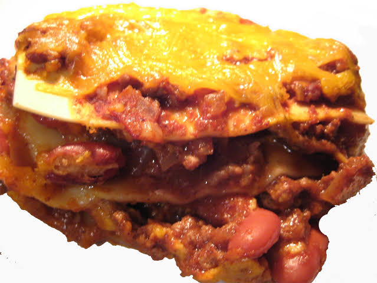

Hot Dog Lasagna

Description
Hot lasagna is a fun and creative twist on the classic italian dish. This family-friendly recipe features layers of cooked lasagna noodles, marinara sauce, sliced hot dogs and goey cheese. It is a simple yet satisfying meal that's sure to please both kids and adult alike.
Ingredients
- Lasagna Noodles
- Marinara Sauce
- Hot Dogs
- Mozzarella Cheese
- Parmesam Cheese
Steps
- Preheat the oven to 375°f(190°c)
- Cook the lasagna noodles according to the package instructions until al dente. Drain and set aside.
- In a baking dish, spread a thine layer of marinara sauce on the bottom.
- Arrange a layer of cooked lasagna over the sauce.
- Place sliced hot dogs evenly over the noodles.
- Spoon marinara sauce over the hot dog covering them completely.
- Sprinkle shredded mozzarell cheese over the sauce.
- Repeat the layer until all ingredients are used, ending with the layer of cheese on top.
- Cover the baking dish with aluminium foil and bake in preheated oven for 25-30 minutes or until the cheese is melted and bubbly
- Remove foil and continue baking for additional 5-10 minutes, or until cheese is golden brown.
- Let the hot dog lasagna cool for few minutes before slicing and serving. Enjoy!